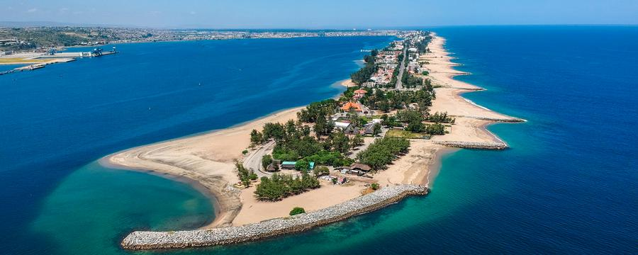

O Lobito
É uma das cidades mais lindas da Costa Africana, daí ser chamada a Sala de Visitas de Angola, com sua restinga que se prolonga por mais de 3 Km, “a cidade azul, quase flutuante, que o mar beija e namora com perigoso amor”. O Lobito tem o porto de mar mais importante da costa ocidental de África, e 2º porto de carga do país. Cidade sede do município com o mesmo nome, na província de Benguela, localiza-se na costa do Atlântico. Tem 3.648 km² e hoje uma população superior a 200.000 habitantes. Limita a Norte com o município do Sumbe, a Este com o município do Bocoio, a Sul com o município de Catumbela e a Oeste com o Oceano Atlântico. Só em Março de 1843 é que D. Maria II aprova o nascimento da cidade do Lobito, antes conhecida como Catumbela das Ostras. Mais não havia que alguns barracões e uma plantação de coqueiros para consolidação da restinga de areia.
Localização do Lobito
Província de Benguela, é o retrato fiel da diversidade etno cultural dos povos de Angola e disso é prova o seu riquíssimo acervo museológico. Possui mais de 1.500 peças, sendo 50% pertencentes ao povo Lunda-Tchokwe.
Caracterização
Tem como data de referência o dia 28 de Outubro de 1969, altura do lançamento do primeiro pilar que acabou por alicerçar aquilo que constitui hoje o museu. Possui no seu acervo mais de 1513 peças museológicas. Mais de 50% do seu acervo, representa peças da cultura Lunda¬ Cokwe. Conta com cinco técnicos médios na especialidade de história e geografia e um técnico superior em geografia.